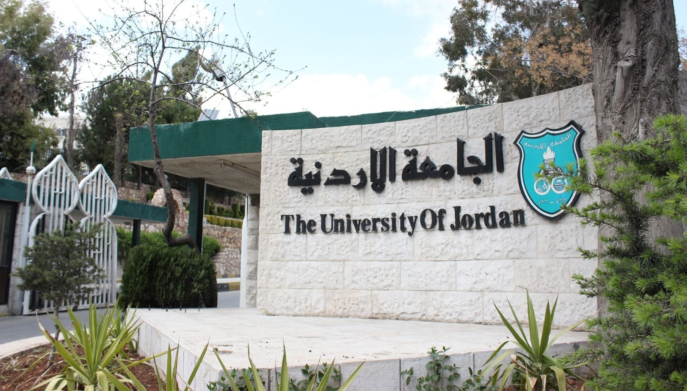

The University of Jordan (UJ),established in 1962 by a Royal Decree, is Jordan's largest and first university. Located in the capital city of Amman, UJ has developed into a leading global educational institution, known for its commitment to excellence and diversity in academic offerings. According to the QS World University Rankings 2026, UJ is ranked among the top 350 universities worldwide.
UJ offers a comprehensive range of academic programs across 26 schools, encompassing over 302 programs, including bachelor's, higher diploma, master's, higher specialization in Medicine and Dentistry, and doctoral degrees. The university has earned international accreditation for 55 programs in 11 schools, including Medicine, Pharmacy, Nursing, Dentistry, Engineering, Information Technology, Agriculture, Rehabilitation, Foreign Languages, Business, and Natural Sciences. These programs meet rigorous global standards, ensuring that graduates are equipped with the knowledge and skills needed to excel in their respective fields. The university's dedication to international accreditation solidifies its position as a key player in the global education arena.
At the undergraduate level, UJ offers 106 programs across disciplines such as Medicine, Dentistry, Pharmacy, Nursing, Rehabilitation Sciences, Sciences, Agriculture, Engineering, Information Technology, Arts, Business Administration, Sharia, Educational Sciences, Law, Sports Sciences, Arts and Design, International Studies, Politics, Foreign Languages, and Tourism and Archeology. For postgraduate studies, UJ provides 40 doctoral programs, 126 master's programs, 22 higher specialization programs in Medicine and Dentistry, and 7 diploma programs.
UJ focuses on creating a supportive and forward-looking educational environment to enhance the quality of education and keep up with technological advancements, labor-market demands, and entrepreneurial needs. This involves the integration of e-learning methodologies, digitizing educational materials, creating interactive lectures, renovating lecture rooms into smart spaces, and incorporating modern instructional methods like blended and online learning.
The university is also undertaking a wide campaign to send distinguished graduates abroad in all fields of specialization, recruiting distinguished faculty members, and launching a comprehensive campaign to develop curricula tailored to market needs, focusing on providing students with the skills necessary for the job market.
With over 7,000 international students hailing from more than 130 countries, UJ embraces diversity and inclusivity. The university's multicultural environment fosters a rich exchange of ideas, perspectives, and experiences, enhancing the overall learning environment.
Nestled in the heart of Amman, UJ provides students with more than just an education—it offers a vibrant campus life surrounded by essential amenities. Students can explore shopping centers, find comfortable accommodation, savor diverse cuisines in local restaurants, and enjoy entertainment options, creating a well-rounded university experience.
The university has achieved significant recognition in the QS World University Rankings by Subject 2025. UJ's Nursing program is ranked 47 globally, 4 subjects in the top 100, 9 subjects in the top 200, and 17 subjects in the top 300.
UJ's faculty is highly qualified, with many members holding prominent positions in academia, administration, and politics within Jordan. Some faculty members serve as ministers, advisers, deputies, and university leaders, while others have achieved success in innovation, science, and literature.
Since its inception, UJ has graduated over 270,000 students, and its employment reputation is ranked 194 worldwide according to the QS World University Rankings 2026. Our medical students consistently secure top scores globally in medical specialization admissions in the United States, a testament to the high-caliber education provided at UJ.
To see the Majors of university of jordanNote :
You can go to the Uni of jordan website from this picture
Click on (الجامعة الاردنية)